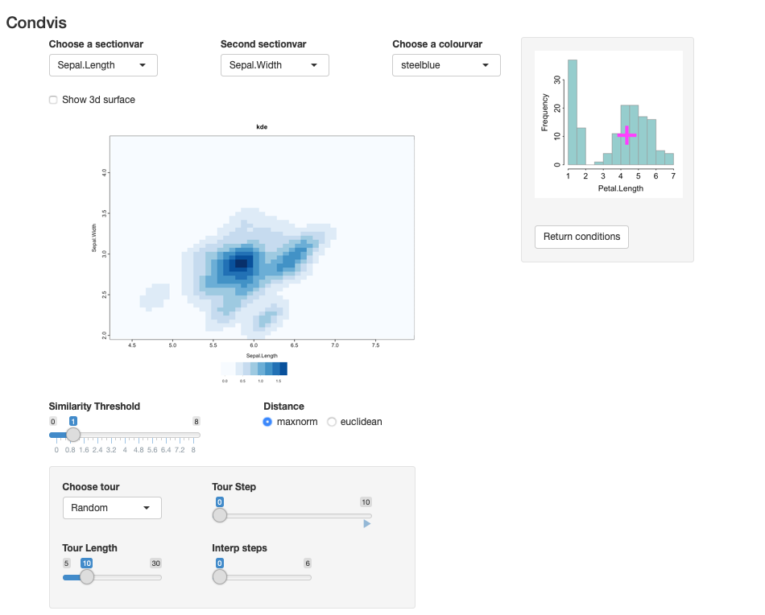

The goal of condvis2 is to visualise prediction models via shiny. Predictions are generated from one or more model fits. Low-dimensional visualisations are constructed showing the relationship between the response and one or two (section) predictors, conditional on the remaining predictors. The section predictors and conditioning values are selected within the shiny app.
Installation
You can install condvis2 from github with:
# install.packages("devtools")
devtools::install_github("cbhurley/condvis2")Example 1: A prediction model
This is a basic condvis example.
We will use the airquality data built in to R.
ozone <- na.omit(airquality)
fit <- loess(Ozone~Wind+Solar.R+Temp, data=ozone)
condvis(ozone, fit, sectionvars="Wind", conditionvars=c("Solar.R", "Temp"))The result is shown in the screenshot below. It shows the loess prediction for Wind, conditional on values of the other two predictors.
Only observations whose Solar.R and Temp values are near (207,79) are shown. The user can move around the pink cross to see how the prediction varies.
 Check out the vignette
Check out the vignette Introduction to condvis2 for more information and details.
Example 2: A density estimate
library(ks)
data(iris)
irisf <- kde(x=iris[,1:3])
condvis(data = iris, model = list(kde=irisf),
sectionvars= c("Sepal.Length", "Sepal.Width"),
conditionvars= "Petal.Length", density=T)The result is shown in the screenshot below. It shows the estimated density of two variables conditional on the third.

References
Catherine B. Hurley, Mark O’Connell, Katarina Domijan. (2021) Interactive slice visualization for exploring machine learning models. arXiv 2101.06986.
Mark O’Connell, Catherine Hurley, Katarina Domijan. (2017) Conditional Visualization for Statistical Models: An Introduction to the condvis Package in R. Journal of Statistical Software 81(5) 1–20.